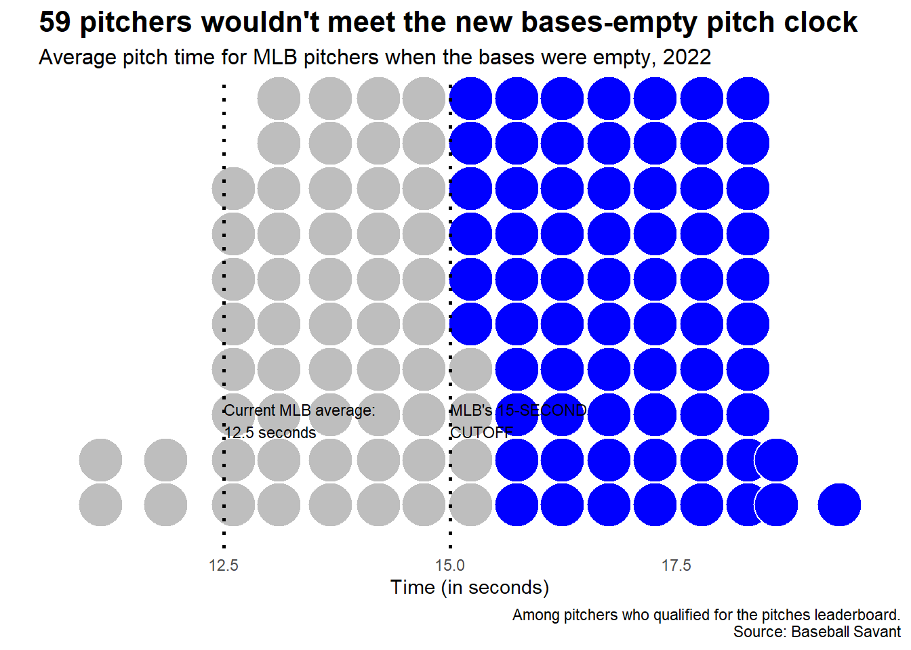
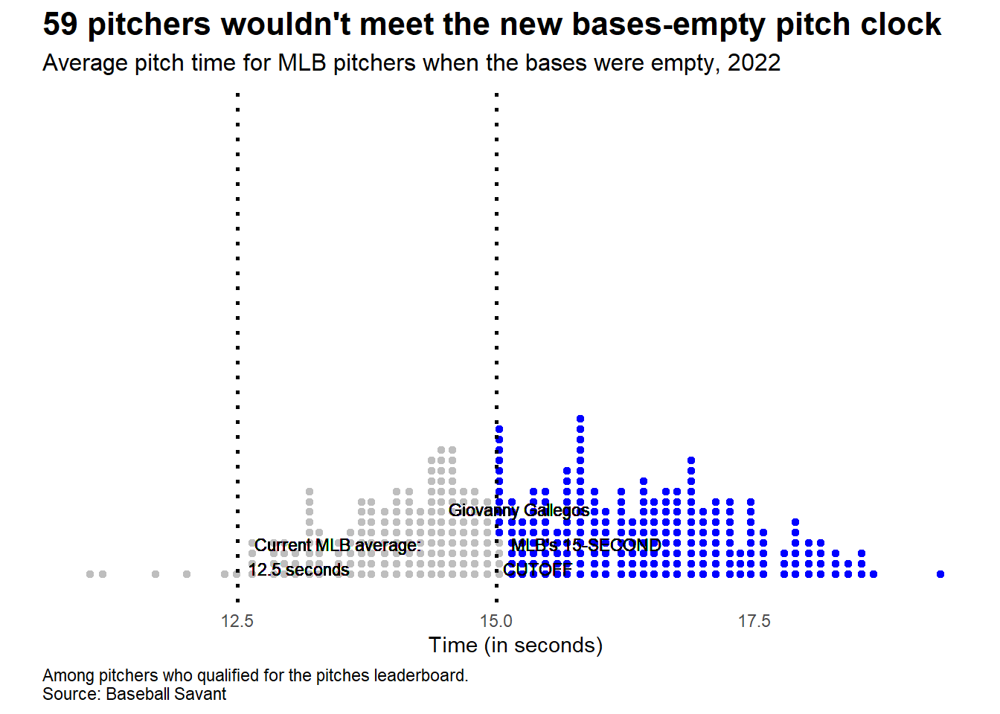

# Classify the pitchers based on the 15-second cutoffpitch_data <- pitch_data %>%mutate(Classification =ifelse(median_seconds_empty >15, "Above 15 Seconds", "Below 15 Seconds"))
# Plot the dataggplot(pitch_data, aes(x = median_seconds_empty)) +geom_dotplot(binwidth =0.5, fill =ifelse(pitch_data$median_seconds_empty >15, "blue", "gray"), color ="white") +geom_vline(xintercept =12.5, linetype ="dotted", size =1) +geom_vline(xintercept =15, linetype ="dotted", size =1) +annotate("text", x =12.5, y =0.25, label ="Current MLB average:\n12.5 seconds", hjust =0, size =3) +annotate("text", x =15, y =0.25, label ="MLB's 15-SECOND\nCUTOFF", hjust =0, size =3) +labs(title ="59 pitchers wouldn't meet the new bases-empty pitch clock",subtitle ="Average pitch time for MLB pitchers when the bases were empty, 2022",x ="Time (in seconds)",y ="",caption ="Among pitchers who qualified for the pitches leaderboard.\nSource: Baseball Savant") +theme_minimal() +theme(plot.title =element_text(size =16, face ="bold"),plot.subtitle =element_text(size =12),axis.text.y =element_blank(),axis.ticks.y =element_blank(),panel.grid.major =element_blank(),panel.grid.minor =element_blank())
Warning: Using `size` aesthetic for lines was deprecated in ggplot2 3.4.0.
ℹ Please use `linewidth` instead.

I realized that the above was based on this season’s data so far
# Read the datasetpitch_data2022 <-read.csv("C:/Users/cplay/Downloads/pitch_tempo_2022.csv")
# Plot the dataggplot(pitch_data, aes(x = median_seconds_empty)) +geom_dotplot(binwidth =0.5, fill =ifelse(pitch_data$median_seconds_empty >15, "blue", "gray"), color ="white") +geom_vline(xintercept =12.5, linetype ="dotted", size =1) +geom_vline(xintercept =15, linetype ="dotted", size =1) +annotate("text", x =12.5, y =0.25, label ="Current MLB average:\n12.5 seconds", hjust =0, size =3) +annotate("text", x =15, y =0.25, label ="MLB's 15-SECOND\nCUTOFF", hjust =0, size =3) +labs(title ="59 pitchers wouldn't meet the new bases-empty pitch clock",subtitle ="Average pitch time for MLB pitchers when the bases were empty, 2022",x ="Time (in seconds)",y ="",caption ="Among pitchers who qualified for the pitches leaderboard.\nSource: Baseball Savant") +theme_minimal() +theme(plot.title =element_text(size =16, face ="bold"),plot.subtitle =element_text(size =12),axis.text.y =element_blank(),axis.ticks.y =element_blank(),panel.grid.major =element_blank(),panel.grid.minor =element_blank())
Overall I wasn’t totally satisfied with this output so I asked GPT if they could replicate something better.
# Classify the pitchers based on the 15-second cutoffpitch_data <- pitch_data %>%mutate(Classification =ifelse(median_seconds_empty >15, "Above 15 Seconds", "Below 15 Seconds"))
# Identify Giovanny Gallegosgallegos_time <- pitch_data %>%filter(entity_name =="Freeland, Kyle") %>%select(median_seconds_empty) %>%pull()# Plot the dataggplot(pitch_data, aes(x = median_seconds_empty)) +geom_dotplot(binwidth =0.1, fill =ifelse(pitch_data$median_seconds_empty >15, "blue", "gray"), color ="white", dotsize =1) +geom_vline(xintercept =12.5, linetype ="dotted", size =1) +geom_vline(xintercept =15, linetype ="dotted", size =1) +geom_text(aes(x =12.5, y =0.05), label ="Current MLB average:\n12.5 seconds", hjust =-0.1, size =3) +geom_text(aes(x =15, y =0.05), label ="MLB's 15-SECOND\nCUTOFF", hjust =-0.1, size =3) +geom_text(aes(x = gallegos_time, y =0.15), label ="Giovanny Gallegos", hjust =1, size =3) +labs(title ="59 pitchers wouldn't meet the new bases-empty pitch clock",subtitle ="Average pitch time for MLB pitchers when the bases were empty, 2022",x ="Time (in seconds)",y ="",caption ="Among pitchers who qualified for the pitches leaderboard.\nSource: Baseball Savant") +theme_minimal() +theme(plot.title =element_text(size =16, face ="bold"),plot.subtitle =element_text(size =12),axis.text.y =element_blank(),axis.ticks.y =element_blank(),panel.grid.major =element_blank(),panel.grid.minor =element_blank(),plot.caption =element_text(hjust =0))
Warning in geom_text(aes(x = 12.5, y = 0.05), label = "Current MLB average:\n12.5 seconds", : All aesthetics have length 1, but the data has 380 rows.
ℹ Please consider using `annotate()` or provide this layer with data containing
a single row.
Warning in geom_text(aes(x = 15, y = 0.05), label = "MLB's 15-SECOND\nCUTOFF", : All aesthetics have length 1, but the data has 380 rows.
ℹ Please consider using `annotate()` or provide this layer with data containing
a single row.
Warning in geom_text(aes(x = gallegos_time, y = 0.15), label = "Giovanny Gallegos", : All aesthetics have length 1, but the data has 380 rows.
ℹ Please consider using `annotate()` or provide this layer with data containing
a single row.

This came out better but ultimately not exactly like the graph.